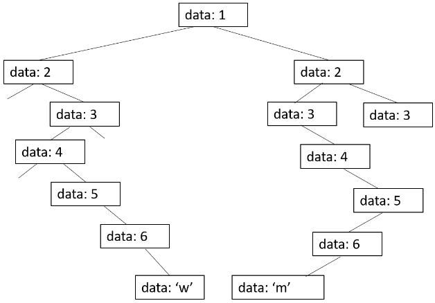

Assignment
1. Objectives
the objectives of this lab are to:
- Become familiar with binary trees;
- Know how to traverse a binary tree;
- Learn how to modify a binary tree; and
- Use recursion to traverse and modify a binary tree.
2. Introduction
Braille is a tactile writing system used by people with visual impairment. It is traditionally written with embossed paper. Today, people typically use a braille writer, such as a portable braille notetaker or computer that prints with a braille embosser. As for reading computer screens, braille users have the option of using refreshable braille displays. What makes it refreshable is whenever the user moves their cursor through keyboard or voice commands, the display updates the dots in the braille cells.

(Figure 1) Person using a screen reader, by Elypse at stock.adobe.com

(Figure 2) An example of a braille display, from PaTTAN
In this lab, you will build a binary tree which translates braille into English letters.
3. Braille Overview
Braille was the first writing system with binary encoding. The system as devised by Louis Braille consists of two parts:
- Character encoding that mapped characters of the alphabet to six bits (0's and 1's).
- The physical representation of those six-bit characters with raised dots in a braille cell.
Within an individual cell, the dot positions are arranged in a three by two grid. A raised dot can appear in any of the six positions, producing sixty-four possible patterns, including one in which there are no raised dots.
A braille letter is commonly described by listing the positions where dots are raised. The positions are universally numbered, from top to bottom, as 1 to 3 on the left column and 4 to 6 on the right column. For example, an "m" is represented with cells 1, 3, 4 raised and 2, 5, 6 lowered, ⡉.
| 1 | 4 |
| 2 | 5 |
| 3 | 6 |
Braille cell numbering

(Figure 3)
In our program, we will represent a braille character as a string of 6 0's and 1's. A '1' represents a raised dot, a '0' represents a lowered dot. For example, 'm' would be represented:
'm' → 101100
4. Braille as a Binary Tree
We can store braille encodings as paths through a binary tree. Each of the first 6 levels represents a position in a braille cell. The 7th level's leaf nodes will store the translated character of that path through the tree. If a position is raised, the path should take that position node's right child. If the position is lowered, it should travel to the left child. A partial tree is shown below. A more complete tree for the full English alphabet can be found in alphabet_tree.txt.
(Figure 4)
5. Program Overview
Your program will have these main functionalities:
- build a binary tree representing braille encoding of the English alphabet
- add a braille translation to your binary tree
- given a braille encoding (a string of six 0's and 1's), find the associated English letter
- traverse the entire tree to produce a file mapping english letters to braille encodings
In braille_translator.py you will find the following:
- BrailleTree class
- attributes:
- root, a Node representing the first position braille cell
- print(self):
- a method for printing the whole tree, useful for debugging
- read_file(self, filename):
- a method that takes a file name of english letters and their braille representation
- check_braille(self, braille_string):
- prints the English letter represented by the braille string, if it exists in the tree
- check_braille(self, braille_string, node):
- a recursive helper function to find the english character given a partial braille string and a starting node
- add_value(self, braille_string, val):
- function to add a new value to our tree represented by braille_string
- add_value(self, braille_string, node, val):
- a private recursive function for adding a value to the tree by adding internal position nodes and value leaf nodes
- write_values(self, filepath):
- write all English letters and their braille representations from the tree to a file
- Node class
- attributes:
- data; string or int. Interior nodes represent the braille cell position (1-6). Final leaf nodes represent English characters represented by the path through the tree.
- left; left Node child of current node. The left child represents the path where the current node position is set to lowered braille state
- right; right Node child of current node. The right child represents the path where the current node position is set to raised braille state
- is_leaf
- returns if node has no children
- is_position
- returns if Node represents braille cell position (as opposed to translated letter)
- print(), print_nomes(), print_lines()
- helper methods for outputting tree
- alphabet.txt
- file of braille translations written in the form
- alphabet_tree.txt
- shows what the final full binary tree should look like
- traversal_soltn.txt
- demonstrates what your write_values method should produce
- main.py
- runs interactive program that reads in alphabet file, writes your traversal to a file, then is an interactive program for translating braille sequences
Other files:
Tasks
For this lab you should:
- complete the_check_braille() recursive helper method in BrailleTree
- Take time to really read and understand the _check_braille() docstring
- Look at how add_value() and check_braille() use _check_braille() to get additional information on its use
- complete the _add_value() recursive helper method in BrailleTree
- see add_value() and read_file() to get additional information on its use
- note how add_value() uses _check_braille() and what parameters it passes to _add_value()
- once add_value() is complete, you should be able to run the main program and see your tree printed out
__
Note: since our trees are large and hard to see, try piping console output into a file
- comment out interactive_translator(braille_string) in main.py
- from the shell run:
python main.py > output.txt - this sends all information that would have been printed to the console to a file
__
Note: if the call to the interactive translator (~line 23 in main.py), the program still expects input even though the prompt is printed to output.txt. If it seems like your program is hanging and that line is uncommented, you still need to type 'Y' in the shell after running
- complete write_values() method in BrailleTree
- this method should traverse your whole BrailleTree and create a file where each line is <English letter> <braille string>. See traversal_soltn.txt to see what your final output should be>
- Consider the traversal orders we learned in class, which would be most appropriate?
- extend interactive_translator() in main.py to check for invalid input
- if the user enters an invalid braille (any string besides size 0's and 1's), the program should raise a ValueError, passing in a meaningful message, print the ValueError's error message, then prompt the user for another input.
- extend interactive_translator() to process multiple braille characters
- interactive_translator() currently only processes single braille characters. Extend the program to process full words.
- e.g.,
>> Give a braille sequence of 0's and 1's:
110010100010111000111000101010
Braille Translation: hello - update your invalid input checking to allow longer valid submissions (hint: consider using the % operator for checking a valid number of characters)
- check that your name (and partner if applicable) is on top of your brailletree.py and main.py files and that your code is well documented.